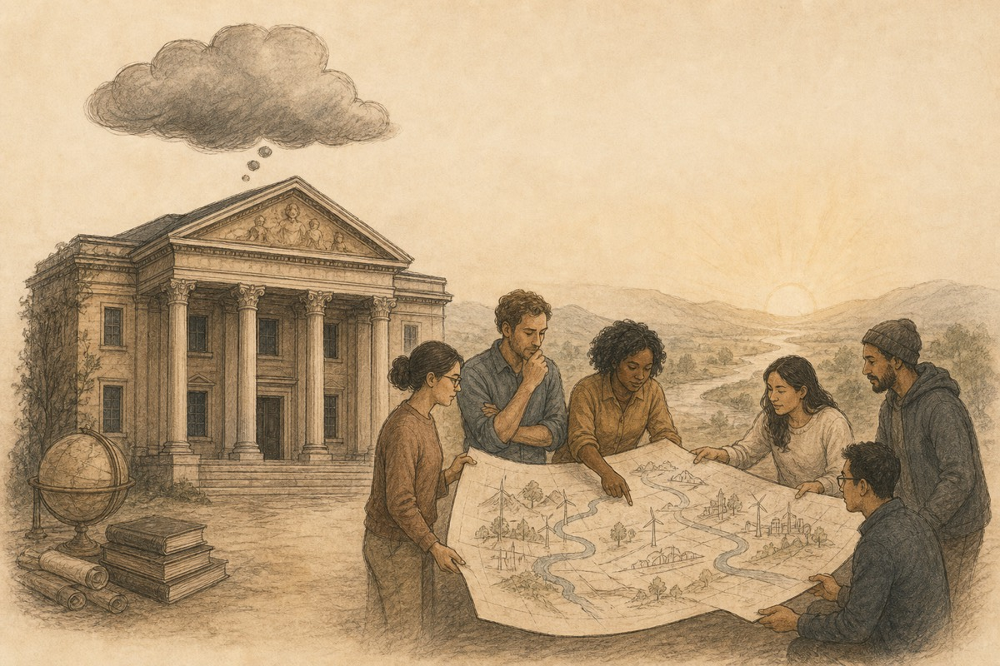

结语 / 共六章
这只是乌云，还不是终局
经济学不会因此终结，默认假设需要重新估值。
结语
《分工之后》结语
结语：这只是乌云，还不是终局

写到这里，本文真正想说的话，其实已经可以压缩成一句更短的判断：过去的经济学并没有突然错，只是它赖以成立的一部分生产力前提，正在变化。
这也是为什么本文要从替旧理论辩护开始，而不急着否定旧理论。分工在过去并非次优答案，而恰恰是最优答案之一。它帮助人类社会在单个行动单元能力有限、执行成本高昂的时代，建立了大规模生产、复杂交换、企业组织和现代增长。它曾经如此正确，所以今天更必须认真面对，当支撑它的条件开始变化时，哪些判断还能延续，哪些判断必须被重估。
本文提出的“乌云”，也正是在这个意义上成立。它并不宣告现代经济学即将坍塌，也不预言企业、市场、制度和分工会在短时间内消失。真正的问题在于：如果 agent 系统正在改变行动单元的能力边界，正在降低越来越多任务的执行成本，正在让更少的人配合更强的工具完成更长链条的工作，那么过去围绕深分工形成的组织直觉，就不再能毫无保留地被继续默认。
于是，现代经济学大厦上出现的这朵乌云，并不飘在它最表层的公式和结论之上；它更接近那些深层默认假设。过去我们默认，任务切得更细，总体就更高效；岗位分得更清，协作就更稳定；管理链条更完整，组织就更可控。但现在，这些判断都开始需要重新附带一个前提问题：在新的生产力条件下，它们是否仍然成立？
如果这个问题值得被认真对待，那么未来真正重要的，就不只是在旧流程上多接几个 agent 工具或自动化接口，还要重新思考三件更根本的事。
第一，未来经济学需要重新界定什么是最小有效行动单元。过去这个单位通常是单个劳动者加上岗位训练，未来它越来越可能是“人 + agent + 工具 + agent 工作流”的组合体。只要这个单位发生变化，许多围绕劳动分工建立起来的判断就都需要重新估值。
第二，未来经济学需要重新回答什么样的任务应该分工，什么样的任务应该闭环。过去的问题更多是“如何拆开才能做得出来”，未来的问题会越来越变成“拆开之后是否反而更慢、更碎、更丢失意图”。这将不只属于企业管理学，也会重新进入政治经济学和制度经济学的中心。
第三，未来经济学需要重新理解组织存在的理由。企业、平台、市场、制度不会消失，但它们会被迫重新回答自己在新生产力条件下的功能是什么。谁来保留上下文，谁来承担风险，谁来拥有资本，谁来组织长期信任，谁来对完整结果负责，这些问题都会重新被摆到桌面上。
因此，本文并不试图在这里给出一个完整的新经济学体系。它所做的，只是把问题重新摆正。过去两个多世纪里，分工是一道极其成功的答案；今天，它开始第一次在大面积场景中遭遇一个新的追问：当更强的行动单元已经出现之后，继续把任务越切越碎，是否仍然是最优组织原则？
如果答案是否定的，我们面对的也经济学不会因此终结，它会重新进入生成期。新的生产力正在逼近，新的生产关系不会永远缺席；新的组织形态正在摸索，新的问题意识也迟早要被命名。乌云的意义，不在于宣告天塌下来，它提醒人们：气压已经变了。
这就是《分工之后》真正想指出的地方。